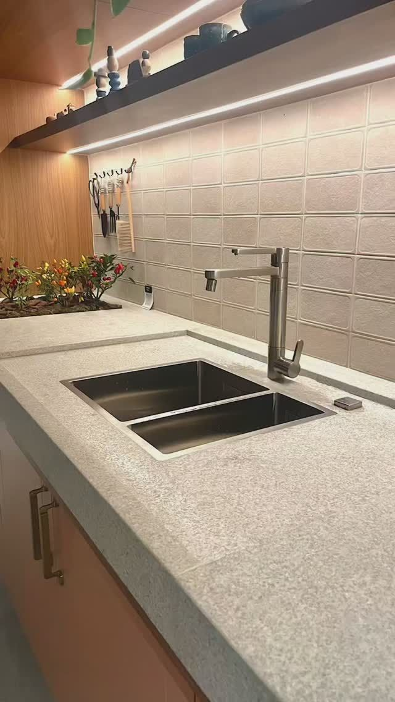
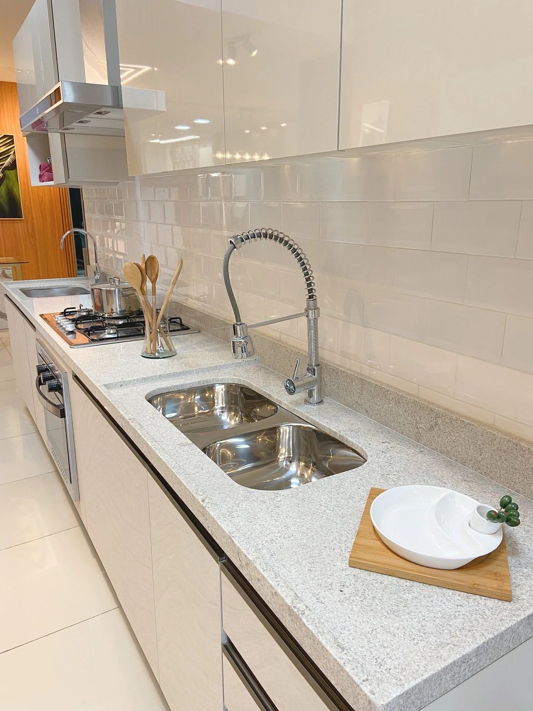
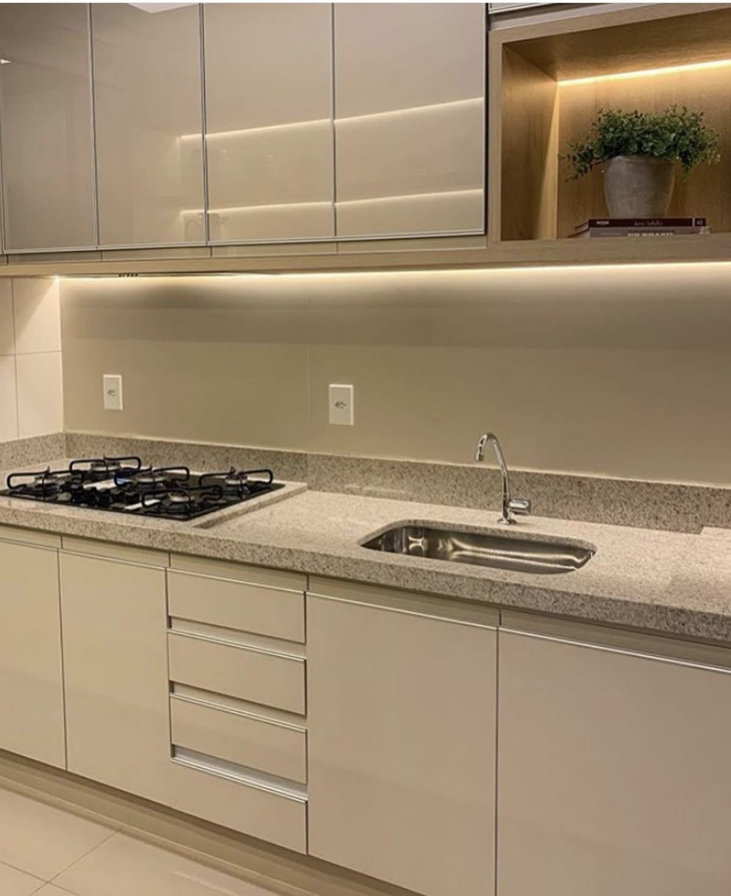
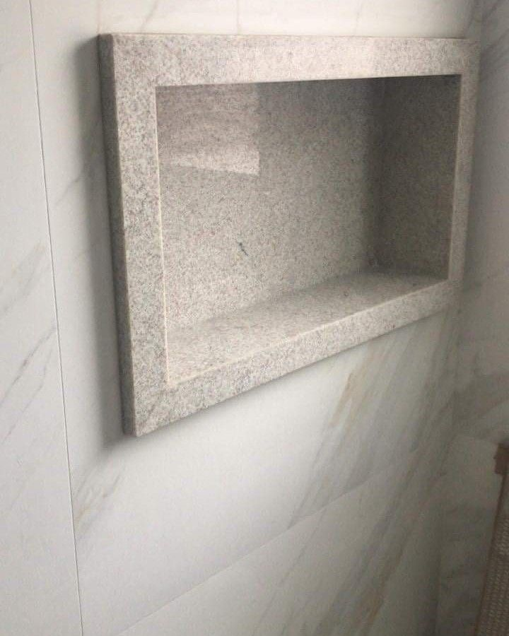
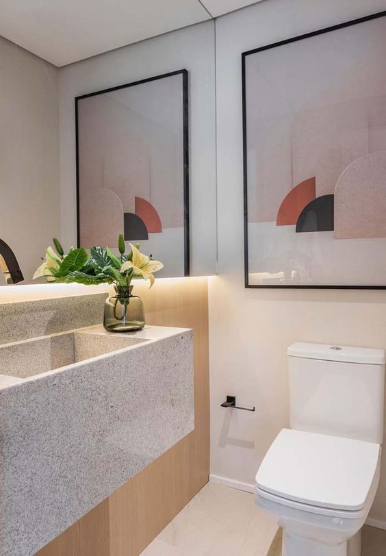
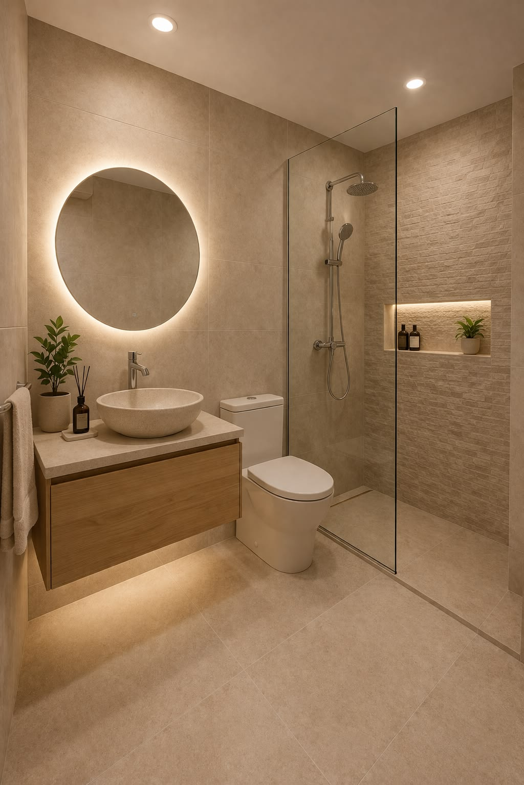

Sofisticação e Contraste
O Branco Itaúnas é uma pedra natural brasileira de coloração predominantemente branca, com granulações sutis em tons de bege, cinza e marrom claro. Seu visual uniforme, clean e elegante faz com que seja amplamente utilizado em projetos residenciais e comerciais
Muito utilizado por arquitetos e designers de interiores que desejam fugir dos padrões convencionais, o Branco Itaúnas combina perfeitamente com estilos contemporâneos, clássicos, minimalistas e escandinavos. Sua tonalidade neutra harmoniza com madeiras naturais, metais, vidros e elementos em preto fosco, permitindo infinitas combinações de design.
Aplicações Recomendadas
O Branco Itaúnas é uma rocha versátil que se adapta a diversos ambientes. Suas principais aplicações incluem:
- Revestimentos de paredes internas e painéis de TV
- Tampos de lavabos esculpidos sob medida
- Nichos
- Detalhes decorativos e tampos de mesa
- Pisos, Escadas, Soleiras e Peitoris
Ficha Técnica
Projetos Executados em Branco Itaúnas






Deseja este material no seu projeto?
Fale diretamente com os nossos projetistas no WhatsApp e receba um estudo de paginação e orçamento personalizado para sua obra.
Solicitar Orçamento Grátis